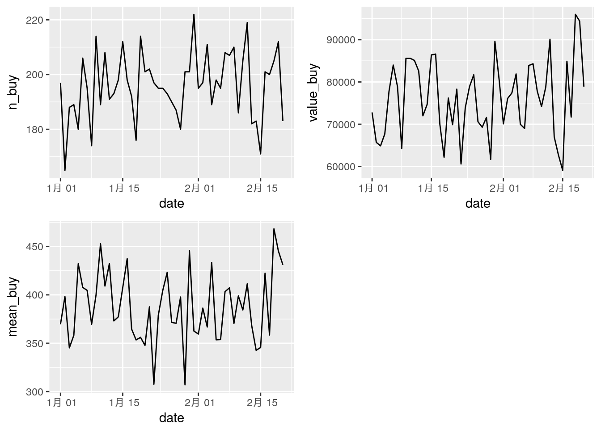
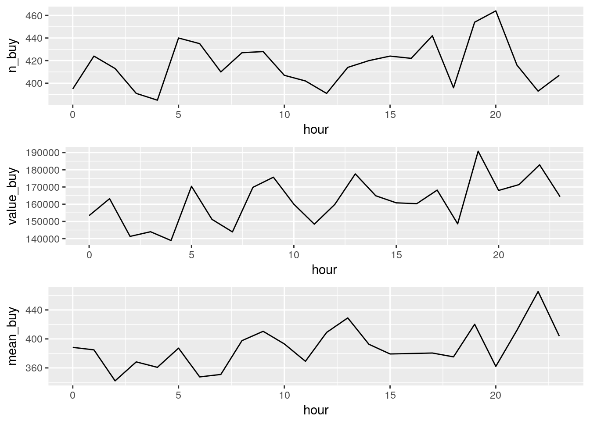
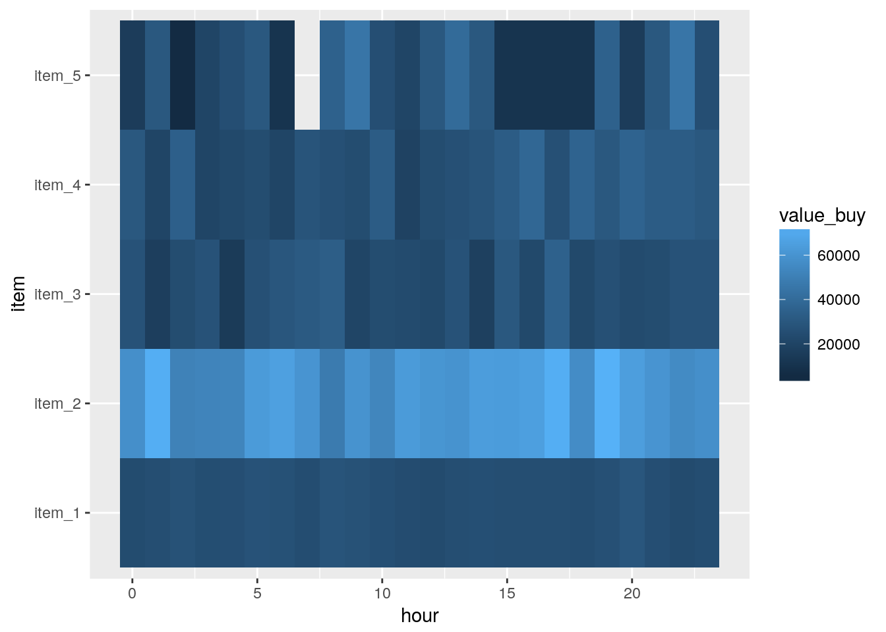

lesson: 3 日別・時間別集計
ここでは、lesson2で準備したdf_logという仮想ログデータを用いて、日別集計と時間別集計を算出してまとめることを目指します。その中でlubridateによる日時データからの特定の要素(日、時間など)取り出し解説します。
3.1 想定シナリオ
lesson2で作成したアイテム購入ログデータを元に日別集計を行います:
- 日別購入件数
- 日別売上合計
- 日別購入単価平均
この集計により、どの日に売上が多かったかなどを検証することができます。
また、同様に時間帯別集計を行います:
- 時間別購入件数
- 時間別売上合計
- 時間別購入単価平均
この集計により、どの時間帯で売上が多かったかなどを検証することができます。
3.2 処理の実行
3.2.1 パッケージ読み込み
ここで使用するパッケージを読み込みます:
library(tidyverse)
library(lubridate)
library(gridExtra)tidyverseは楽ですね。あと可視化用にgridExtraを使います。
3.2.2 データ読み込み
lesson2で作成したcsvを読み込みます。readr::read_csv()を使います:
df_log <- readr::read_csv("df_log.csv")3.2.3 データハンドリングと可視化
3.2.3.1 日別
それぞれの日でどれだけ売上があったかを集計してデータセットにします。基本的な流れは以下のとおりです:
- 日時のタイムスタンプから日付の変数(date)を作成
- dateごとに処理するようにグループ化
- 各種集計を実施
実際のRのコードは以下のようになります:
df_log_date <- df_log %>%
# 日付による丸め込みを行った変数を準備
mutate(date = date(stamp)) %>%
# 日付によるグループ化
group_by(date) %>%
# グループ化による集計
summarise(
# 購入件数をカウント
n_buy = n(),
# 売上合計
value_buy = sum(value),
# 購入単価平均
mean_buy = mean(value)
)この処理を行ったデータセットは以下のようになります:
knitr::kable(head(df_log_date, 10))| date | n_buy | value_buy | mean_buy |
|---|---|---|---|
| 2018-01-01 | 197 | 72800 | 369.5431 |
| 2018-01-02 | 165 | 65700 | 398.1818 |
| 2018-01-03 | 188 | 64900 | 345.2128 |
| 2018-01-04 | 189 | 67700 | 358.2011 |
| 2018-01-05 | 180 | 77800 | 432.2222 |
| 2018-01-06 | 206 | 84000 | 407.7670 |
| 2018-01-07 | 195 | 78900 | 404.6154 |
| 2018-01-08 | 174 | 64300 | 369.5402 |
| 2018-01-09 | 214 | 85600 | 400.0000 |
| 2018-01-10 | 189 | 85600 | 452.9101 |
このデータを元にggplot2で可視化してみます:
# ベースとなるggplotオブジェクトを作成
p_date <- ggplot(df_log_date)
# 日別購入件数
p_date1 <- p_date +
geom_line(aes(x = date, y = n_buy))
# 日別売上合計
p_date2 <- p_date +
geom_line(aes(x = date, y = value_buy))
# 日別購入単価平均
p_date3 <- p_date +
geom_line(aes(x = date, y = mean_buy))
# plotを集約
grid.arrange(p_date1, p_date2, p_date3, nrow = 2)
3.2.3.2 時間別
それぞれの時間でどれだけ売上があったかを集計してデータセットにします。基本的な流れは以下のとおりです:
- 日時のタイムスタンプから時間を取り出した変数(hour)を作成
- hourごとに処理するようにグループ化
- 各種集計を実施
実際のRのコードは以下のようになります:
df_log_hour <- df_log %>%
# 時間を取り出した変数を準備
mutate(hour = hour(stamp)) %>%
# 時間によるグループ化
group_by(hour) %>%
# グループ化による集計
summarise(
# 購入件数をカウント
n_buy = n(),
# 売上合計
value_buy = sum(value),
# 購入単価平均
mean_buy = mean(value)
)この処理を行ったデータセットは以下のようになります:
knitr::kable(head(df_log_hour, 10))| hour | n_buy | value_buy | mean_buy |
|---|---|---|---|
| 0 | 395 | 153400 | 388.3544 |
| 1 | 424 | 163200 | 384.9057 |
| 2 | 413 | 141300 | 342.1308 |
| 3 | 391 | 144000 | 368.2864 |
| 4 | 385 | 138900 | 360.7792 |
| 5 | 440 | 170400 | 387.2727 |
| 6 | 435 | 151200 | 347.5862 |
| 7 | 410 | 143900 | 350.9756 |
| 8 | 427 | 169800 | 397.6581 |
| 9 | 428 | 175700 | 410.5140 |
このデータを元にggplot2で可視化してみます:
# ベースとなるggplotオブジェクトを作成
p_hour <- ggplot(df_log_hour)
# 時間別購入件数
p_hour1 <- p_hour +
geom_line(aes(x = hour, y = n_buy))
# 時間別売上合計
p_hour2 <- p_hour +
geom_line(aes(x = hour, y = value_buy))
# 時間別購入単価平均
p_hour3 <- p_hour +
geom_line(aes(x = hour, y = mean_buy))
# plotを集約
grid.arrange(p_hour1, p_hour2, p_hour3)
ついでに、時間x項目でもやってみます。上との違いは、group_by()でitemも含めるところです
df_log_hour_item <- df_log %>%
mutate(hour = hour(stamp)) %>%
# グループ化する変数にhour, itemを指定
group_by(hour, item) %>%
summarise(
n_buy = n(),
value_buy = sum(value),
mean_buy = mean(value)
)この処理を行ったデータセットは以下のようになります:
knitr::kable(head(df_log_hour_item))| hour | item | n_buy | value_buy | mean_buy |
|---|---|---|---|---|
| 0 | item_1 | 234 | 23400 | 100 |
| 0 | item_2 | 116 | 58000 | 500 |
| 0 | item_3 | 27 | 27000 | 1000 |
| 0 | item_4 | 15 | 30000 | 2000 |
| 0 | item_5 | 3 | 15000 | 5000 |
| 1 | item_1 | 247 | 24700 | 100 |
このデータを元にggplot2で可視化してみます:
# 時間と項目で可視化
p_hour_item <- ggplot(df_log_hour_item)+
geom_tile(aes(x = hour, y = item, fill = value_buy))
p_hour_item
3.2.4 解説
今回の処理のポイントは、日時データから特定の要素の取り出しです。lubridateには、日時データから日付や時刻を取り出す関数が要してあります。
x <- ymd_hms("2018-02-24 15:30:20")
# 年の取り出し
year(x)
#> [1] 2018
# 月の取り出し
month(x)
#> [1] 2
# 日の取り出し
day(x)
#> [1] 24
# 時間の取り出し
hour(x)
#> [1] 15これらはすべて数値型となります。また、日時データから日付型のデータを取得したい場合は、date()を使ってください:
date(x)
#> [1] "2018-02-24"こちらを利用すると、日付データが返ってきます。それぞれ用途によって使い分けるといいでしょう。
また、日時データの丸め込み関数もいろいろ準備されていますが、ここでは省略します。
3.3 参考資料
- Get/set years component of a date-time
年を取り出す
year()の説明。- Get/set hours component of a date-time
時間を取得する
hour()の説明- Get/set date component of a date-time
lubridateのdate関数の説明